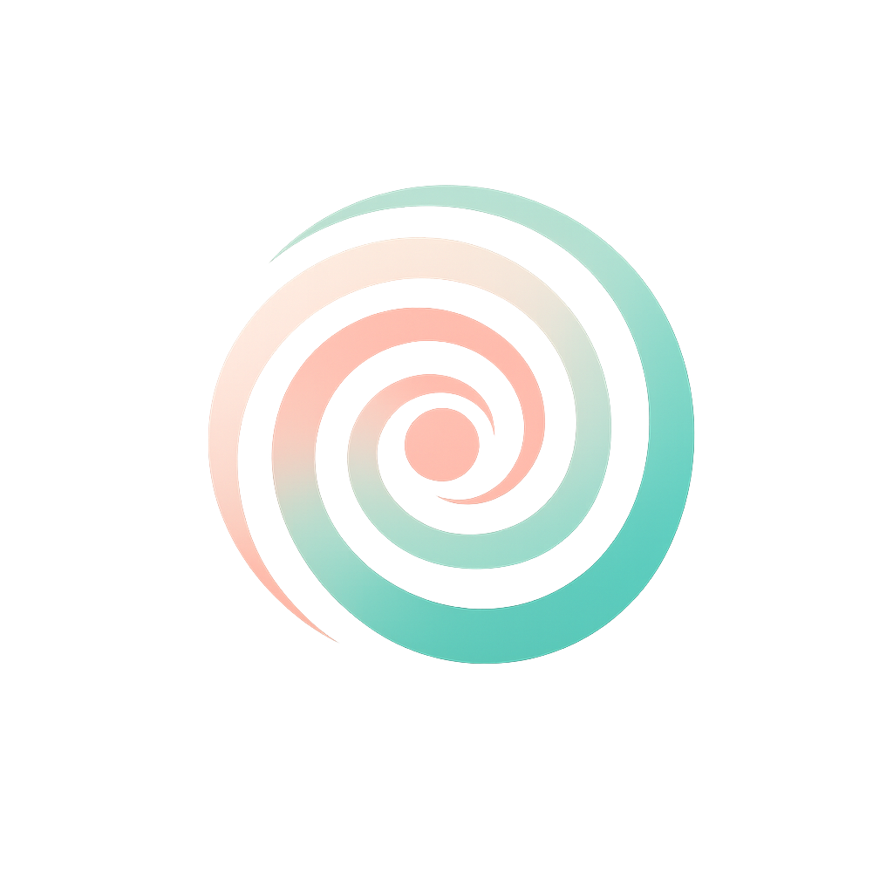

Educación, neurobiología y conciencia para nuevas formas de aprender y vivir.
Conocer másLa educación puede ayudar a no repetirla.
Comprender el sistema nervioso en el aprendizaje.
El cuerpo también aprende y comunica.
Lenguaje como puente, no como conflicto.